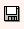

Salvestamine, valideerimine ja veateated
Salvestamine ja valideerimine
Salvestamine toimub toimetamisala ülal paremas ääres asuva flopikujulise nupu  abil.
Artikli salvestamisel kustutatakse kõik tühjad tekstiväljad ja grupid ning kontrollitakse artikli vastavust skeemile. Kui artikkel skeemile ei vasta, informeeritakse kasutajat veateatega ning salvestamise protsess katkeb. Kui artikli struktuuri ja sisuga on kõik korras, saadetakse muudatus serverisse.
Igal hetkel võid artikli sisu valideerida (kontrollida ta vastavust sõnastiku skeemile) ka ilma salvestamata, vastav linnukesekujuline nupp asub kohe salvestamisnupu kõrval.
Valideerimisel tekkivad veateated
Kui artikkel ei valideeru, kuvatakse avanevas aknas mõni neist veateadetest. Veateadete tekst ja keel võib erinevatel arvutitel varieeruda, lähtuda tuleb veateate koodist.
0xC00CE014
Element '{http://www.eki.ee/dict/ss1}kaut' is unexpected according to content model of parent element '{http://www.eki.ee/dict/ss1}komg'.
ja 0xC00CE012
Content for element '{http://www.eki.ee/dict/vot}ng' is incomplete according to the DTD/Schema. Expecting: {http://www.eki.ee/dict/vot}n, {http://www.eki.ee/dict/vot}qnp.
Elemendi {http://www.eki.ee/dict/usv}cg sisu pole DTD/Schema järgi täielik. Eeldatakse: {http://www.eki.ee/dict/usv}caut.
Selgitus: Skeemi järgi peab elemendis sisalduma kohustuslikke elemente, ent need on artiklis puudu.
Lahendus: Lisa puuduv element või muuda skeemi.
0xC00CE018
Text is not allowed in the context of element '{http://www.eki.ee/dict/psv}gki' according to DTD/Schema.
Elemendi sisuks ei ole lubatud teksti (stringi).
Seletus: Skeemi järgi ei või sellesse elementi (antud näites sõnastikus psv element gki) lubatud sisestada teksti.
Lahendus: Kui selles elemendis ikkagi on vaja teksti hoida, siis tuleb skeemi muuta.
0xC00CE011
Element '{http://www.eki.ee/dict/vot}VT' cannot be empty according to the DTD/Schema.
Seletus: Skeemi järgi ei ei või element VT tühi olla.
Lahendus: Täita element või muuta skeemi.
0xC00CE015
Elemendi {http://www.eki.ee/dict/ss1}p atribuuti {http://www.eki.ee/dict/ss1}aG pole DTD/Schemas määratletud.
Selgitus: Elemendile ei saa lisada skeemis määratlemata atribuuti aG.
Lahendus: atribuut aG kustutada või muuta skeemi.
0xC00CE020
Nõutav atribuut http://www.eki.ee/dict/vsl:tvtl2 puudub.
Selgitus: Skeemi järgi peab olemas olema atribuut tvtl2, ent antud artiklis see puudub.
Lahendus: Lisada nõutud element või muuta skeemi.
0xC00CE201
Error parsing '' as language datatype.
Selgitus: Atribuut xml:lang on jäänud täitmata (xml:lang=""), ent keel peab olema alati määratud.
Lahendus: Anda atribuudile xml:lang mingi väärtus (näiteks Toimetamisalal).
0xC00CE
'mustlaskeel' violates enumeration constraint of 'vms uurali soome-ugri lms-permi lms-volga lms-mari lms-mordva lms-saami lms eesti-liivi-vadja eesti-liivi eesti-vadja eesti ...'.
Selgitus: See veateade tuleb näiteks siis, kui loendist on väärtuseid kustutatud, ent sõnastikus esineb veel neid kustutatud väärtusi.
Lahendus: Paranda loendit või vali sõnaartiklis loendist uus väärtus.